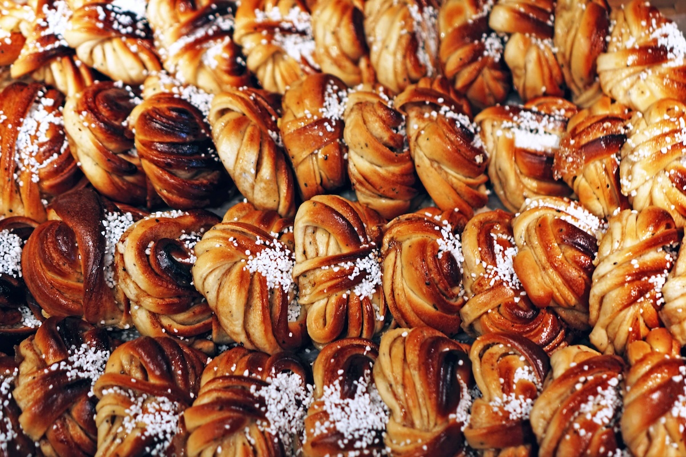

Discover Fika
Fika Time is your go-to space for everything from Swedish cinnamon buns and classic pastries to hidden café gems in the Nordics. Whether you're curious about the meaning of fika, craving a slice of Prinsesstårta, or planning your next Nordic coffee break, you'll find ideas, stories, and sweet inspiration right here. Let's fika like locals.


Freshly Brewed Reads
Discover the art of Swedish fika culture